Магнитный индуктор для импульсного
намагничивания и размагничивания
редкоземельных постоянных
магнитов диаметром до 20 мм высотой до 20 мм
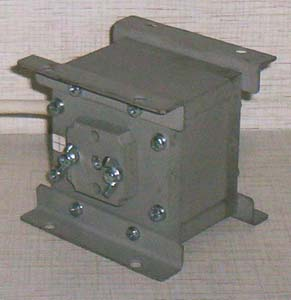
1. Введение
Индуктор предназначен для работы в составе установки импульсного намагничивания-размагничивания [14] постоянных магнитов в комплекте с емкостным накопителем энергии [5] 0.5 кДж 900 В. Он позволяет производить одноосное намагничивание до насыщения и частичное размагничивание магнитов на основе редкоземельных металлов (неодим-железо-бор, самарий-кобальт) - спеченных или магнитопластов [7], а также постоянных магнитов любых других марок [9] с меньшими значениями коэрцитивной силы (ферриты, ални, алнико, ЮНД, ЮНДК и т. д.). Индуктор разработан как аналог устройства с зоной намагничивания (размагничивания) большего диаметра [8], при этом для совместной с ним работы могут использоваться емкостные накопители с вдвое меньшей энергией.
В ряде случаев при конструировании и настройке магнитных систем требуется либо стабилизировать магнит, чтобы уменьшить временную деградацию его магнитных свойств, либо подобрать требуемое рабочее значение магнитной индукции. Выполнить эту процедуру можно посредством приложения обратного размагничивающего поля к предварительно намагниченному до насыщения магниту [12, 13]. При использовании высококоэрцитивных редкоземельных постоянных магнитов состава самарий-кобальт или неодим-железо-бор [9] требуемая величина магнитной индукции размагничивающего поля составляет порядка 1 ... 1.5 Тл или даже более. Индуктор позволяет выполнить настройку рабочего значения магнитной индукции любых марок и типов постоянных магнитов, укладывающихся в габарит рабочей зоны устройства. При этом может использоваться пошаговый импульсный режим частичного размагничивания с последовательным увеличением амплитуды индукции обратного магнитного поля и, при необходимости, импульсного частичного намагничивания (домагничивания) прямым полем, если по каким-либо причинам размагничивание оказалось чрезмерным.
2. Расчет индуктора
Расчет импульсного индуктора производился с помощью программ Coil [2], UNI [4], а также методом конечных элементов [11] с помощью программы Ansoft Maxwell [1]. Результат расчета параметров цилиндрического соленоида (цилиндрической катушки) индуктора с помощью программы Coil показан на рис. 2.1, а параметров импульса тока для соленоида без магнитопровода - на рис. 2.2. Соленоид состоит из 215 витков медного провода диаметром 1.25 мм. Его расчетное активное сопротивление 0.3035 Ом, индуктивность - 0.6891 мГн. Индукция магнитного поля в центре катушки (без стального магнитопровода) составляет 4.128 Тл при амплитуде импульса тока 790.6 А (емкостной накопитель энергии 0.5 кДж 900 В). Таким образом, даже без магнитопровода катушка индуктора в центре обеспечивает достаточную для намагничивания редкоземельных постоянных магнитов амплитуду магнитной индукции. Добавление магнитопровода приведет к увеличению индуктивности, уменьшению амплитуды импульса тока, увеличению его длительности, а также повышению амплитуды магнитной индукции в зоне намагничивания и увеличению однородности намагничивающего поля.
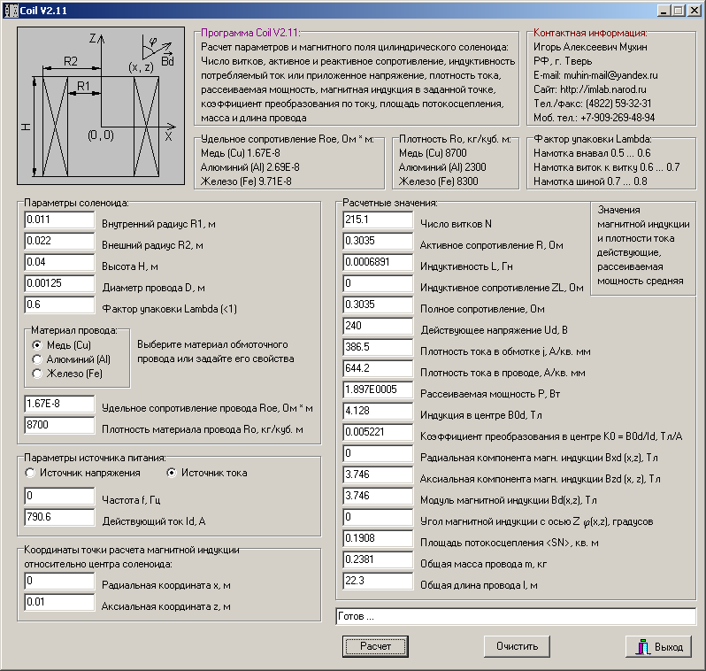
Рис. 2.1. Расчет цилиндрической катушки индуктора с помощью программы Coil для импульса тока амплитудой 790.6 А (емкостной накопитель 0.5 кДж 900 В).
Рис. 2.2. Расчет параметров импульса тока через катушку индуктора без магнитопровода с помощью программы UNI: емкостной накопитель 0.5 кДж 900 В, амплитуда импульса тока 790.6 А.
Результаты расчета параметров импульса тока через индуктор в сборе (катушка со стальным магнитопроводом) с помощью программы UNI при полном зареде емкостного накопителя энергии 0.5 кДж 900 В приведены на рис. 2.3. Активное сопротивление рассчитано с помощью программы Coil (0.3035 Ом). Индуктивность индуктора рассчитана с помощью программы Ansoft Maxwell при магнитодвижущей силе (МДС) 730 ∙ 215 ≈ 150000 Ампер ∙ витков, и составляет 0.88388 мГн. Амплитуда импульса тока составляет примерно 730 А при подключении индуктора к емкостному накопителю энергии 0.5 кДж 900 В. Длительность импульса тока несколько больше 5 мс (при времени достижения пика 1.46 мс), что вполне достаточно для намагничивания спеченных редкоземельных постоянных магнитов заданного типоразмера.
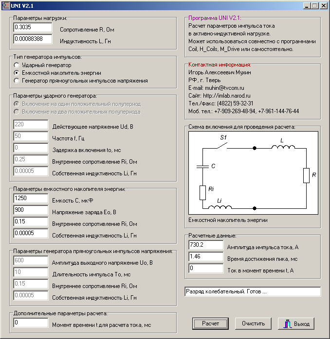
Рис. 2.3. Расчет параметров импульса тока через индуктор в сборе (с магнитопроводом) с помощью программы UNI: емкостной накопитель 0.5 кДж 900 В, амплитуда импульса тока 730.2 А.
На рис. 2.4 показан вид расчетной модели индуктора в программе Ansoft Maxwell. МДС катушки, принимаемая для расчета индуктивности и индукции магнитного поля, определяется амплитудой импульса тока через катушку, зависящей от параметров емкостного накопителя энергии (емкости и напряжения). Амплитуда импульса тока, в свою очередь, рассчитывается с помощью программы UNI (см. рис. 2.3). Для катушки, содержащей 215 витков, при амплитуде импульса тока 730 А МДС, принимаемая для расчета, примерно равна 155000 А ∙ витков.
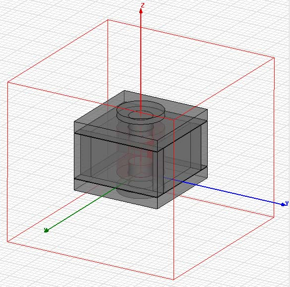
Рис. 2.4. Расчетная модель индуктора в программе Ansoft Maxwell. Стальные детали корпуса показаны серым цветом. Катушка внутри корпуса - красным. Шаг сетки 5 мм.
Расчетное значение индуктивности достаточно слабо зависит от амплитуды импульса тока и составляет 0.88388 мГн для МДС 155000 А ∙ витков. Это значение индуктивности принято для расчетов амплитуды импульса тока через катушку с помощью программы UNI (рис. 2.3).
Расчет магнитной индукции в зоне намагничивания индуктора на разных расстояниях от его оси для заданной амплитуды импульса тока 730 А (МДС 155000 А ∙ витков) приведен на рис. 2.5.
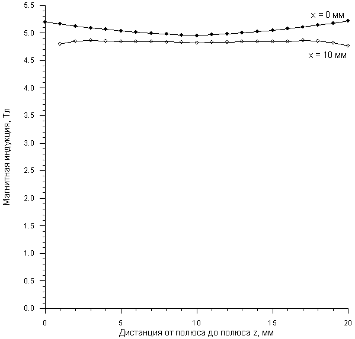
Рис. 2.5. Распределение магнитной индукции в рабочей зоне индуктора (амплитудное значение, емкостной накопитель 0.5 кДж 900 В, амплитуда тока 730 А, МДС 155000 А ∙ витков) вдоль оси (x = 0 мм) и на расстоянии 10 мм от оси (x = 10 мм).
Таким образом, из приведенных выше расчетов следует, что при использовании емкостного накопителя энергии 0.5 кДж 900 В амплитуда магнитной индукции в рабочей зоне превышает 4.5 Тл (рис. 2.5), что, в принципе, вполне достаточно для намагничивания редкоземельных магнитов состава неодим-железо-бор и самарий-кобальт.
3. Тепловой расчет
Перегрев обмотки индуктора за один импульс тока выполнен с помощью программы dTWire [3]. Форма импульса предполагается синусоидальной. Результаты расчета представлены на рис. 3.1 для амплитуды импульса тока 730 А при длительности импульса тока 5 мс. Перегрев не превышает 4.5 0C за один импульс. Количество импульсов в непрерывной серии может составить, соответственно, примерно 20, после чего индуктор потребуется охлаждать. При принудительном охлаждении вентилятором до начальной рабочей температуры время охлаждения обычно не превышает получаса, и общая производительность будет не менее 40 намагничиваний в час.
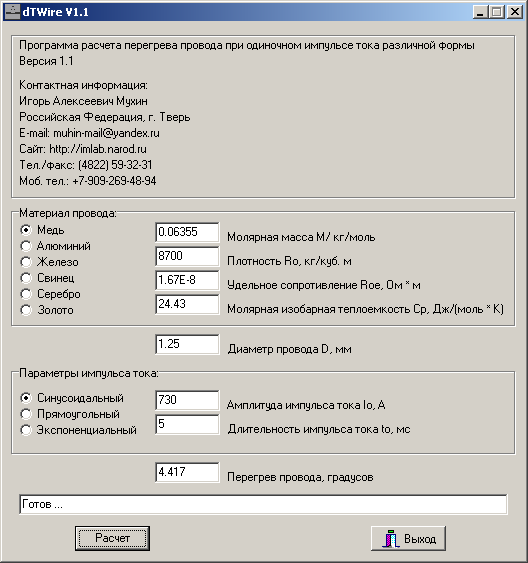
Рис. 3.1. Расчет перегрева обмотки индуктора при подаче синусоидального импульса тока амплитудой 730 А длительностью 5 мс (емкостной накопитель 0.5 кДж 900 В).
4. Конструкция индуктора
Эскизы индуктора представлены на рис. 4.1, 4.2. Цилиндрическая катушка индуктора зажата в магнитопроводе из шести стальных плит с круглыми проходными отверстиями диаметром 21 мм во фланцах (фронтальных плитах). В проходные отверстия вставляются полюсные наконечники диаметром 20 мм, обеспечивающие рабочий зазор 20 мм. Для надежного крепления полюсных наконечников к фронтальным плитам используются рым-болты М4.
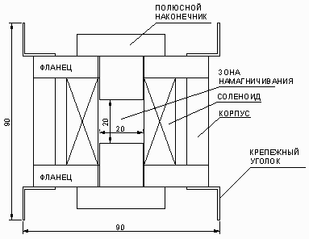
Рис. 4.1. Эскиз индуктора.
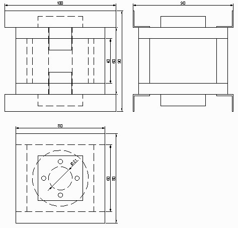
Рис. 4.2. Эскиз индуктора в трех проекциях.
Внешний вид индуктора показан на рис. 4.3 - 4.6.
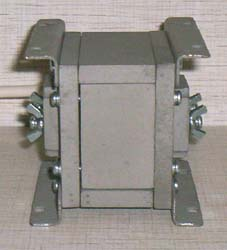
Рис. 4.3. Вид индуктора спереди (полюсные наконечники вставлены и закреплены рым-болтами).
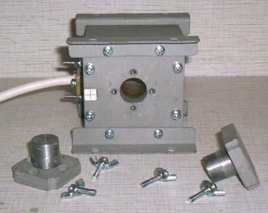
Рис. 4.4. Вид индуктора сбоку со снятыми полюсными наконечниками.
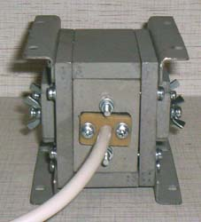
Рис. 4.5. Вид индуктора сзади со стороны кабеля подключения (полюсные наконечники вставлены и закреплены рым-болтами).
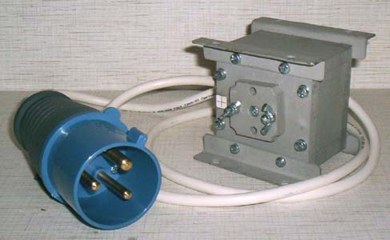
Рис. 4.6. Вид индуктора в сборе с элементами подключения.
5. Технические данные индуктора:
6. Испытания индуктора в составе установки намагничивания
Внешний вид установки импульсного намагничивания или частичного размагничивания редкоземельных постоянных магнитов в комплекте с емкостным накопителем энергии 0.5 кДж 900 В показан на рис. 6.1.
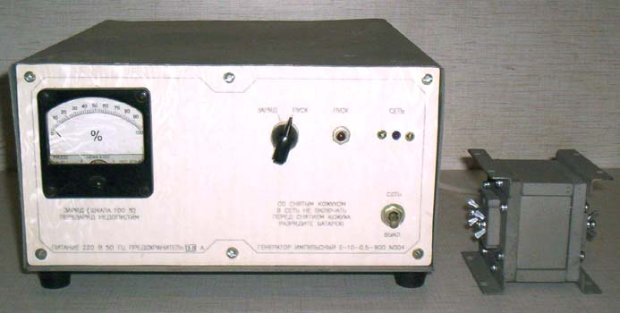
Рис. 6.1. Внешний вид установки намагничивания (размагничивания) редкоземельных постоянных магнитов в комплекте индуктора с зоной намагничивания диаметром 20 мм высотой 20 мм и емкостного накопителя энергии 0.5 кДж 900 В.
Активное сопротивление индуктора с кабелем подключения измерено мультиметром APPA-107N и составляет 0.42 Ом, достаточно хорошо согласуясь с рассчитанным значением 0.3035 Ом. Индуктивность индуктора с кабелем подключения 1.35 мГн измерена прибором VC62430 на частоте 1000 Гц, также вполне соответствуя рассчитанному значению 0.88388 мГн (с учетом довольно высокой частоты измерений).
Контроль формы импульса и амплитуды магнитной индукции в рабочей зоне индуктора без одного полюсного наконечника выполнен с помощью импульсного тесламетра [10] и осциллографа UTD2102CEL-R. Сигнал снимался непосредственно с датчика Холла типа ПХЭ [6]. Форма импульса магнитной индукции в рабочей зоне показана на рис. 6.2. Амплитуда магнитной индукции достигает 4.4 Тл при отсутствии одного полюсного наконечника. Если второй полюсной наконечник будет установлен, то поле возрастет. Длительность импульса на уровне половины амплитуды примерно 5 мс, общая длительность импульса порядка 15 мс.
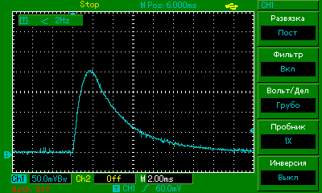
Рис. 6.2. Форма импульса магнитной индукции в центре рабочей зоны индуктора (один полюсной наконечник снят): цена деления по вертикали 50 мВ/дел., цена деления по горизонтали 2 мс/дел. Чувствительность датчика Холла 45 мВ/Тл, амплитуда магнитной индукции 4.44 Тл.
Соответствие между данными расчета и измерений достаточно хорошее. Получаемое в индукторе магнитное поле вполне достаточно для намагничивания редкоземельных постоянных магнитов.
Ссылки:
09.03.2025
Альтернативные источники
энергии
Компьютеры и
Интернет
Магнитные поля
Механотронные системы
Перспективные
разработки
Электроника и
технология